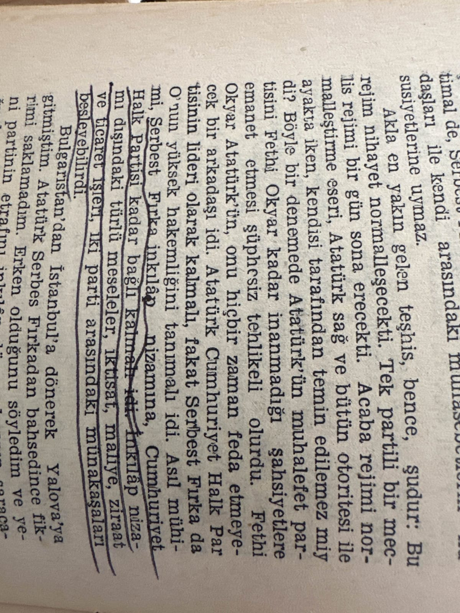
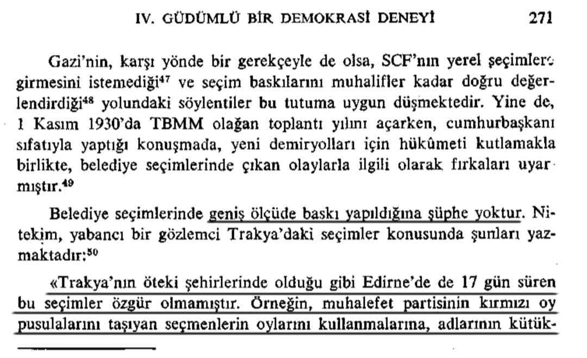

📌”Atatürk CHP’nin Lideri olarak kalmalı, Fakat Serbest Fırka da O’nun Yüksek Hakemliğini tanımalı idi.”
📚Falih Rıfkı Atay, Çankaya, C.2, s.434

📌 *Belediye seçimlerinde geniş ölçüde baskı yapıldığına şüphe yoktur, bu seçimler özgür olmamıştır.*📚 Mete Tunçay, Türkiye Cumhuriyeti'nde Tek Parti Yönetiminin Kurulması, s.271